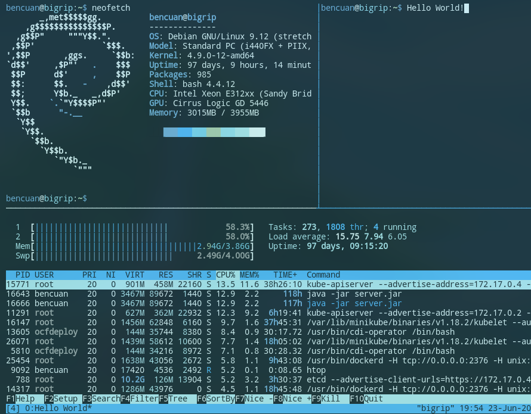

Beginner Lab 2 - Core Shell
Welcome to Lab 2! In this lab you will be learning how to work productively in a shell.
Remember to submit your answers in the Gradescope assignment!
Don’t forget to use Google and man when stuck. The resources linked at the bottom may be helpful as well.

Setting up
This lab requires a bash shell, vim, and tmux.
If you do not have tmux: apt-get tmux
SSH (Secure Shell)
SSH allows you to log in to a remote computer through the internet.
It is the equivalent of opening a shell on a remote computer.
The usage is ssh [remote username]@[remote host].
Question
- Log on to
tsunami.ocf.berkeley.edu with your OCF username and password. There is a file in ~staff/public_html/decal. Open it. What is the secret in the file?
Pipes and Redirection
Chaining together commands is essential to automating your way through the shell. Here’s a quick cheat sheet:
> : Redirect stdout to a file (Will overwrite the file).
>> : Append stdout to a file (same as > except does not overwrite).
< : Read input from a file.
| : Send output from one program to the input of the next.
Here’s an example: let’s say you’re taking a class that needs you to submit a text file with your SID in it. Your first instinct might be to open up a text editor (like vim) and simply type it in, but there’s a faster way to create files! Here it is:
echo '123456789' > sid.txt
Questions
Scrabble is a fun word game that rewards players for knowing a bunch of weird words. I’d like to add some more words to my aresnal!
For the next couple questions, download this text file containing all valid Scrabble words using wget, curl, or a similar command. We’ll be having some fun with it!
- I get pretty stuck when I get a rack of all consonants! Help me find some words that don’t contain any vowels by writing a command to print out the first 10 words that do not contain any of the letters A, E, I, O, U, or Y. Text manipulation commands like
grep, awk or sed might be useful!
Example output:
BRR
BRRR
CRWTH
... (7 more lines not shown)
- In Scrabble, you can get a Bingo (and +50 points!) if you use all 7 of your letters in the same turn! I’ve got the letters ‘CAL’ in my rack and want to score those big style points with them. Write a command to fetch all of the words containing ‘CAL’ that are 7 or more letters long, and save them to a file called
cal.txt.
cal.txt contents:
ABAPICAL
ACALEPH
ACALEPHE
... (380 more lines not shown)
Other useful tricks
!! can be used to repeat the previous command in the shell.
E.g.
python program.py
sudo !! == sudo python program.py
!:[num] is treated as the previous command’s [num] argument.
E.g.
touch doc.txt
vim !:1 == vim doc.txt
Note: This behavior is from bash and some other shells that implement it.
A quick intro to vim
vim is a very widely used text editor. It’s well known for its customizability and plethora of keybinds. While it may be somewhat unintuitive to use at first (since a lot of common keybinds for things like copy-paste, saving, or exiting don’t do what you think they will), it’s well worth learning about, and you’ll certainly come across it all the time when working in the shell!
Why vim?
- It’s a descendant of vi, which was written in Berkeley by Bill Joy, who went on to found Sun Microsystems.
- Sometimes you will be suddenly thrown into
vim via merging git conflicts or other programs.
- It’s included in practically every UNIX environment.
- You can be very productive when familiar with it.
Hello World
Vim is a modal text editor, meaning that you can change editing modes in order to do different things. There are 3 primarily used modes: Normal, Insert, and Visual mode.
Normal mode:
- Used for moving around and performing actions
hjkl to move left, up, down, and right (arrow keys work too but hjkl is usually faster to use!)G to move to end of file, gg to move to beginningi to enter insert mode (a, o also change mode in different ways)dd to cut a lineyy to copy a linep to paste/ to searchu to undo
- Type in commands with
:
- Save with
:w
- Exit with
:q
- Explore more commands online! Here’s a cool cheat sheet to get you started.
Insert mode:

- Used for editing text like a usual editor
- Arrow keys to move
- Esc to exit to normal mode (lots of people bind it to Caps Lock)
Visual mode:
- Enter with
v from normal mode
- Used to select text visually
- Modify selection with normal mode movement commands
- Use
o to move the cursor to the other side of the selection
- Yanking, deleting, and pasting use
y, d, p (sound familiar?)
A key feature of vim is chaining together commands.
Normal mode is essentially a massive amount of shortcuts that you can combine to quickly navigate and edit a file.
Want to move down 3 lines?
You know that j means move down 1 line, so you can use 3j to move down 3.
d is for deletion and w is to jump to the next word, so what does dw do?
Questions
Try playing around with lab2.md while looking up some new commands. Use wget to download it!
- How would you delete the previous 10 lines?
- How would you jump back to the shell without exiting
vim?
- How would you edit a new file alongside another file?
- How would you indent a block of text?
- Tell us about one other cool vim feature you found out about that isn’t mentioned in this lab!
If you’re interested in emacs instead
A quick intro to tmux

Why tmux?
- You can open multiple windows when sshed into a machine.
- You can go compile and run programs while editing them.
- You can logout and ssh back in without having to reopen all your files.
Getting Started:
- Start a session with
tmux.
- Detach from a session with
Ctrl-b d (press d after releasing Ctrl-b)
- Split into 2 panes with
Ctrl-b % (vertical) or Ctrl-b " (horizontal)
- Swap current pane with
Ctrl-b o
- Find more information about tmux online. You might find this cheat sheet helpful!
Questions
- Make a new tmux session. Using tmux shortcuts, try to make your session have a similar layout to the one below, and upload a screenshot of it to Gradescope!

Some things to note:
- The top left panel is resized. By how much, it doesn’t matter.
- The top right panel is named “Hello World”. (You can see this name displayed on the bottom left.)
- You don’t need to run any of the commands I did, but they do look pretty cool :) Try to figure out what command the bottom panel is running, and what it does!
- Don’t worry about copying the layout exactly. The purpose of this exercise is simply to help you get comfortable making custom layouts in tmux.
- If you haven’t already, detach from your current tmux session using
Ctrl+b d. Now, what command would you type to attach back to it?
- What command will delete your session?
- What command will create a new session?
Advanced usage (optional)
- Tmux can be used to share your session with others.
- Try remapping shortcuts like the prefix
Ctrl-b to something more convenient.
Ctrl-b [ can be used to scroll around buffers and copy things.
Submitting the lab
Once you’re done remember to submit your answers and screenshot to Gradescope.
There are multiple valid answers for some of the questions.
Don’t be stressed about getting something exactly correct. We’ll review the answers after the lab is due!
Resources
Keybindings
Learning vim progressively
Tmux cheat sheet